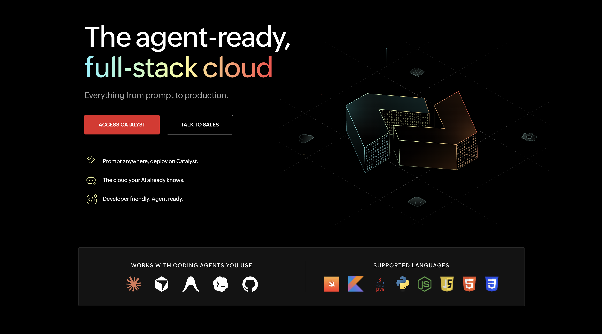
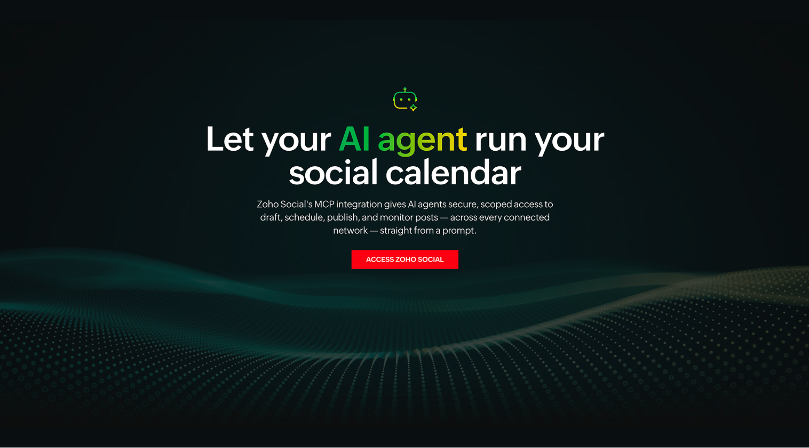
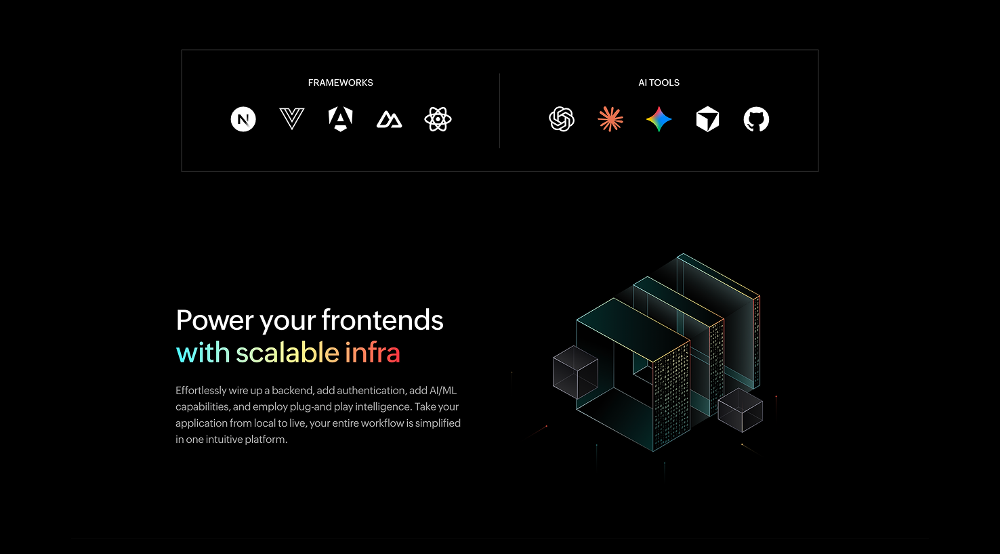
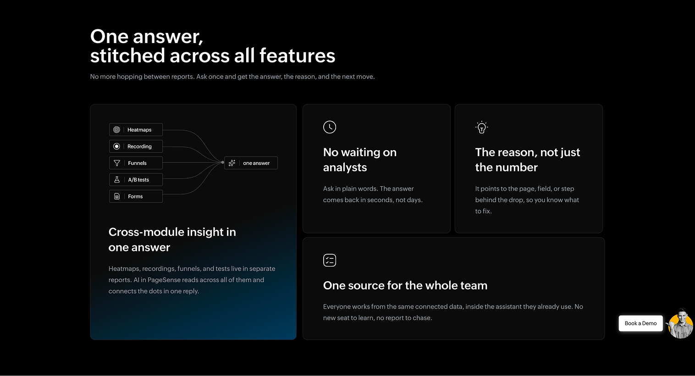
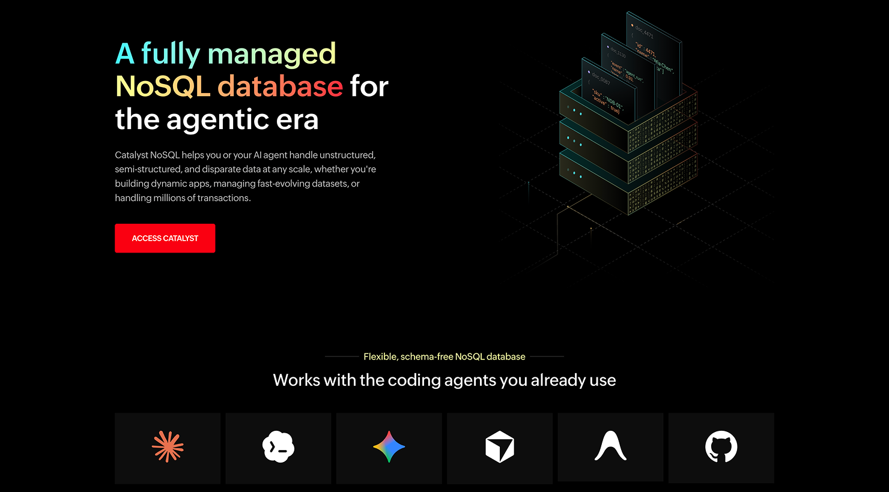

Catalyst by Zoho
Marketing site for Zoho's full-stack cloud platform, covering the product suite, agent integrations, and pricing.
UI/UX Designer
I'm a UI/UX designer and developer who turns ideas into intuitive, engaging, user-focused digital products. My work spans web design, interface design, and front-end development, with a strong eye for visual detail and usability. I care about accessibility as much as aesthetics, and I use AI tools like Claude and ChatGPT to move faster without cutting corners on quality.
A few recent projects.

Marketing site for Zoho's full-stack cloud platform, covering the product suite, agent integrations, and pricing.

Product page and UI mockups showing how AI agents draft, schedule, and publish posts through Zoho Social's MCP integration.

Product landing page for Catalyst's frontend hosting service, including framework support and a live pricing calculator.

Landing page for PageSense's AI-powered analytics MCP server, covering heatmaps, experiments, and cross-module insights.

Landing page for Catalyst's managed NoSQL database, explaining use cases and querying capabilities for developers.
Passionate UI/UX Designer and Developer with experience in creating intuitive, engaging, and user-focused digital experiences. Skilled in web design, UI/UX design, and front-end development, with a strong eye for visual design and usability.
Open to new career and collaborations.
sncreatives0804@gmail.com